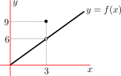
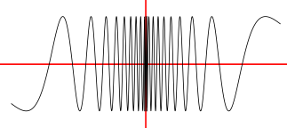
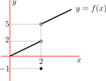
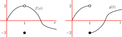
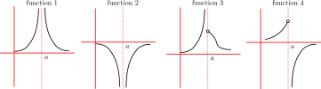
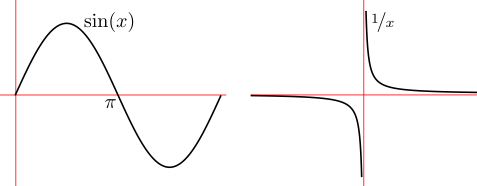
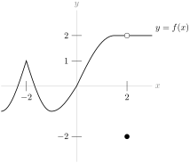
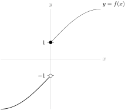
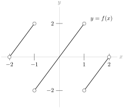

Section 1.3 The Limit of a Function
Subsection 1.3.1 The Limit of a Function
Before we come to definitions, let us start with a little notation for limits.
The notation is just shorthand — we don’t want to have to write out long sentences as we do our mathematics. Whenever you see these symbols you should think of that sentence.
This shorthand also has the benefit of being mathematically precise (we’ll see this later), and (almost) independent of the language in which the author is writing. A mathematician who does not speak English can read the above formula and understand exactly what it means.
In mathematics, like most languages, there is usually more than one way of writing things and we can also write the above limit as
\begin{gather*}
f(x) \to L \mbox{ as } x \to a
\end{gather*}
This can also be read as above, but also as
They mean exactly the same thing in mathematics, even though they might be written, read and said a little differently.
To arrive at the definition of limit, we want to start with a very simple example.
1
Well, we had two limits in the previous sections, so perhaps we really want to “restart” with a very simple example.
Example 1.3.2. A simple limit.
Consider the following function.
\begin{align*}
f(x) &= \begin{cases}
2x & x \lt 3\\
9 & x=3\\
2x & x \gt 3
\end{cases}
\end{align*}
This is an example of a piece-wise function . That is, a function defined in several pieces, rather than as a single formula. We evaluate the function at a particular value of \(x\) on a case-by-case basis. Here is a sketch of it
2
We saw another piecewise function back in Example 0.4.5.

Notice the two circles in the plot. One is open, \(\circ\) and the other is closed \(\bullet\text{.}\)
-
A filled circle has quite a precise meaning — a filled circle at \((x,y)\) means that the function takes the value \(f(x) = y\text{.}\)
-
An open circle is a little harder — an open circle at \((3,6)\) means that the point \((3,6)\) is not on the graph of \(y=f(x)\text{,}\) i.e. \(f(3) \neq 6\text{.}\) We should only use the open circle where it is absolutely necessary in order to avoid confusion.
This function is quite contrived, but it is a very good example to start working with limits more systematically. Consider what the function does close to \(x=3\text{.}\) We already know what happens exactly at \(3\) — \(f(x)=9\) — but I want to look at how the function behaves very close to \(x=3\text{.}\) That is, what does the function do as we look at a point \(x\) that gets closer and closer to \(x=3\text{.}\)
If we plug in some numbers very close to \(3\) (but not exactly 3) into the function we see the following:
| \(x\) | 2.9 | 2.99 | 2.999 | \(\circ\) | 3.001 | 3.01 | 3.1 |
| \(f(x)\) | 5.8 | 5.98 | 5.998 | \(\circ\) | 6.002 | 6.02 | 6.2 |
So as \(x\) moves closer and closer to 3, without being exactly 3, we see that the function moves closer and closer to 6. We can write this as
\begin{align*}
\lim_{x \to 3} f(x) &= 6
\end{align*}
That is
So for \(x\) very close to \(3\text{,}\) without being exactly 3, the function is very close to \(6\) — which is a long way from the value of the function exactly at \(3\text{,}\) \(f(3)=9\text{.}\) Note well that the behaviour of the function as \(x\) gets very close to 3 does not depend on the value of the function at 3.
We now have enough to make an informal definition of a limit, which is actually sufficient for most of what we will do in this text.
Definition 1.3.3. Informal definition of limit.
We write
\begin{align*}
\lim_{x \to a} f(x) &= L
\end{align*}
if the value of the function \(f(x)\) is sure to be arbitrarily close to \(L\) whenever the value of \(x\) is close enough to \(a\text{,}\) without being exactly \(a\text{.}\)
3
You may find the condition “without being exactly \(a\)” a little strange, but there is a good reason for it. One very important application of limits, indeed the main reason we teach the topic, is in the definition of derivatives (see Definition 2.2.1 in the next chapter). In that definition we need to compute the limit \(\ds \lim_{x\rightarrow a} \frac{f(x)-f(a)}{x-a}\text{.}\) In this case the function whose limit is being taken, namely \(\frac{f(x)-f(a)}{x-a}\text{,}\) is not defined at all at \(x=a\text{.}\)
In order to make this definition more mathematically correct, we need to make the idea of “closer and closer” more precise — we do this in Section 1.7. It should be emphasised that the formal definition and the contents of that section are optional material.
For now, let us use the above definition to examine a more substantial example.
Example 1.3.4. \(\ds \lim_{x \to 2} \frac{x-2}{x^2+x-6}\).
-
We are really being asked\begin{align*} \lim_{x \to 2} \frac{x-2}{x^2+x-6} &= \text{ what?} \end{align*}
-
Now if we try to compute \(f(2)\) we get \(0/0\) which is undefined. The function is not defined at that point — this is a good example of why we need limits. We have to sneak up on these places where a function is not defined (or is badly behaved).
-
Very important point: the fraction \(\frac{0}{0}\) is not \(\infty\) and it is not \(1\text{,}\) it is not defined. We cannot ever divide by zero in normal arithmetic and obtain a consistent and mathematically sensible answer. If you learned otherwise in high-school, you should quickly unlearn it.
-
Again, we can plug in some numbers close to \(2\) and see what we find
\(x\) 1.9 1.99 1.999 \(\circ\) 2.001 2.01 2.1 \(f(x)\) 0.20408 0.20040 0.20004 \(\circ\) 0.19996 0.19960 0.19608 -
So it is reasonable to suppose that\begin{align*} \lim_{x \to 2} \frac{x-2}{x^2+x-6} &= 0.2 \end{align*}
The previous two examples are nicely behaved in that the limits we tried to compute actually exist. We now turn to two nastier examples in which the limits we are interested in do not exist.
4
Actually, they are good examples, but the functions in them are nastier.
Example 1.3.5. A bad example.
Consider the following function \(f(x) = \sin( \pi /x )\text{.}\) Find the limit as \(x \to 0\) of \(f(x)\text{.}\)
We should see something interesting happening close to \(x=0\) because \(f(x)\) is undefined there. Using your favourite graph-plotting software you can see that the graph looks roughly like

How to explain this? As \(x\) gets closer and closer to zero, \(\pi/x\) becomes larger and larger (remember what the plot of \(y=1/x\) looks like). So when you take sine of that number, it oscillates faster and faster the closer you get to zero. Since the function does not approach a single number as we bring \(x\) closer and closer to zero, the limit does not exist.
We write this as
\begin{gather*}
\lim_{x\to 0} \sin \left(\frac{\pi}{x}\right) \text{ does not exist}
\end{gather*}
It’s not very inventive notation, however it is clear. We frequently abbreviate “does not exist” to “DNE” and rewrite the above as
\begin{align*}
\lim_{x\to 0} \sin \left(\frac{\pi}{x}\right) &= \text{DNE}
\end{align*}
In the following example, the limit we are interested in does not exist. However the way in which things go wrong is quite different from what we just saw.
Example 1.3.6. A non-existent limit.
Consider the function
\begin{align*}
f(x) &= \begin{cases}
x & x \lt 2 \\
-1 & x=2 \\
x+3 & x \gt 2
\end{cases}
\end{align*}
-
The plot of this function looks like this

-
So let us plug in numbers close to \(2\text{.}\)
\(x\) 1.9 1.99 1.999 \(\circ\) 2.001 2.01 2.1 \(f(x)\) 1.9 1.99 1.999 \(\circ\) 5.001 5.01 5.1 -
This isn’t like before. Now when we approach from below, we seem to be getting closer to \(2\text{,}\) but when we approach from above we seem to be getting closer to \(5\text{.}\) Since we are not approaching the same number the limit does not exist.\begin{align*} \lim_{x \to 2} f(x) &= \text{DNE} \end{align*}
While the limit in the previous example does not exist, the example serves to introduce the idea of “one-sided limits”. For example, we can say that
As \(x\) moves closer and closer to two from below the function approaches 2.
and similarly
As \(x\) moves closer and closer to two from above the function approaches 5.
Definition 1.3.7. Informal definition of one-sided limits.
We write
\begin{align*}
\lim_{x \to a^-} f(x) &= K
\end{align*}
when the value of \(f(x)\) gets closer and closer to \(K\) when \(x \lt a\) and \(x\) moves closer and closer to \(a\text{.}\) Since the \(x\)-values are always less than \(a\text{,}\) we say that \(x\) approaches \(a\) from below. This is also often called the left-hand limit since the \(x\)-values lie to the left of \(a\) on a sketch of the graph.
We similarly write
\begin{align*}
\lim_{x \to a^+} f(x) &= L
\end{align*}
when the value of \(f(x)\) gets closer and closer to \(L\) when \(x \gt a\) and \(x\) moves closer and closer to \(a\text{.}\) For similar reasons we say that \(x\) approaches \(a\) from above, and sometimes refer to this as the right-hand limit.
Note — be careful to include the superscript \(+\) and \(-\) when writing these limits. You might also see the following notations:
\begin{align*}
\lim_{x \to a^+} f(x) &= \lim_{x \to a+} f(x) = \lim_{x \downarrow a} f(x) =
\lim_{x \searrow a} f(x) = L & \text{right-hand limit}\\
\lim_{x \to a^-} f(x) &= \lim_{x \to a-} f(x) = \lim_{x \uparrow a} f(x) =
\lim_{x \nearrow a} f(x) = L & \text{left-hand limit}
\end{align*}
but please use with the notation in Definition 1.3.7 above.
Given these two similar notions of limits, when are they the same? The following theorem tell us.
Theorem 1.3.8. Limits and one sided limits.
\begin{align*}
\lim_{x \to a} f(x) = L && \mbox{ if and only if }
&& \lim_{x \to a^-} f(x) = L \mbox{ and }
\lim_{x \to a^+} f(x) = L
\end{align*}
Notice that this is really two separate statements because of the “if and only if”
-
If the limit of \(f(x)\) as \(x\) approaches \(a\) exists and is equal to \(L\text{,}\) then both the left-hand and right-hand limits exist and are equal to \(L\text{.}\) AND,
-
If the left-hand and right-hand limits as \(x\) approaches \(a\) exist and are equal, then the limit as \(x\) approaches \(a\) exists and is equal to the one-sided limits.
That is — the limit of \(f(x)\) as \(x\) approaches \(a\) will only exist if it doesn’t matter which way we approach \(a\) (either from left or right) AND if we get the same one-sided limits when we approach from left and right, then the limit exists.
We can rephrase the above by writing the contrapositives of the above statements.
5
Given a statement of the form “If A then B”, the contrapositive is “If not B then not A”. They are logically equivalent — if one is true then so is the other. We must take care not to confuse the contrapositive with the converse. Given “If A then B”, the converse is “If B then A”. These are definitely not the same. To see this consider the statement “If he is Shakespeare then he is dead.” The converse is “If he is dead then he is Shakespeare” — clearly garbage since there are plenty of dead people who are not Shakespeare. The contrapositive is “If he is not dead then he is not Shakespeare” — which makes much more sense.
-
If either of the left-hand and right-hand limits as \(x\) approaches \(a\) fail to exist, or if they both exist but are different, then the limit as \(x\) approaches \(a\) does not exist. AND,
-
If the limit as \(x\) approaches \(a\) does not exist, then the left-hand and right-hand limits are either different or at least one of them does not exist.
Here is another limit example
Example 1.3.9. Left- and right-handed limits.
Consider the following two functions and compute their limits and one-sided limits as \(x\) approaches 1:

These are a little different from our previous examples, in that we do not have formulas, only the sketch. But we can still compute the limits.
-
Function on the left — \(f(x)\text{:}\)\begin{align*} \lim_{x \to 1^-} f(x) &= 2 & \lim_{x \to 1^+} f(x) &= 2\\ \\ \end{align*}so by the previous theorem\begin{align*} \lim_{x \to 1} f(x) &= 2 \end{align*}
-
Function on the right — \(g(t)\text{:}\)\begin{align*} \lim_{t \to 1^-} g(t) &= 2 & \text{and } \lim_{t \to 1^+} g(t) &= -2\\ \end{align*}so by the previous theorem\begin{align*} \lim_{t \to 1} g(t) &= \text{DNE} \end{align*}
We have seen 2 ways in which a limit does not exist — in one case the function oscillated wildly, and in the other there was some sort of “jump” in the function, so that the left-hand and right-hand limits were different.
There is a third way that we must also consider. To describe this, consider the following four functions:

None of these functions are defined at \(x=a\text{,}\) nor do the limits as \(x\) approaches \(a\) exist. However we can say more than just “the limits do not exist”.
Notice that the value of function 1 can be made bigger and bigger as we bring \(x\) closer and closer to \(a\text{.}\) Similarly the value of the second function can be made arbitrarily large and negative (i.e. make it as big a negative number as we want) by bringing \(x\) closer and closer to \(a\text{.}\) Based on this observation we have the following definition.
Definition 1.3.11.
We write
\begin{gather*}
\lim_{x \to a} f(x) = + \infty
\end{gather*}
when the value of the function \(f(x)\) becomes arbitrarily large and positive as \(x\) gets closer and closer to \(a\text{,}\) without being exactly \(a\text{.}\)
Similarly, we write
\begin{gather*}
\lim_{x \to a} f(x) = - \infty
\end{gather*}
when the value of the function \(f(x)\) becomes arbitrarily large and negative as \(x\) gets closer and closer to \(a\text{,}\) without being exactly \(a\text{.}\)
A good examples of the above is
\begin{align*}
\lim_{x \to 0} \frac{1}{x^2} &= +\infty & \lim_{x \to 0} -\frac{1}{x^2} &= -\infty
\end{align*}
IMPORTANT POINT: Please do not think of “\(+\infty\)” and “\(-\infty\)” in these statements as numbers. You should think of \(\lim\limits_{x\rightarrow a} f(x) = +\infty\) and \(\lim\limits_{x\rightarrow a} f(x) = -\infty\) as special cases of \(\lim\limits_{x\rightarrow a} f(x) = \text{DNE}\text{.}\) The statement
\begin{gather*}
\lim_{x \to a} f(x) = +\infty
\end{gather*}
does not say “the limit of \(f(x)\) as \(x\) approaches \(a\) is positive infinity”. It says “the function \(f(x)\) becomes arbitrarily large as \(x\) approaches \(a\)”. These are different statements; remember that \(\infty\) is not a number .
6
One needs to be very careful making statements about infinity. At some point in our lives we get around to asking ourselves “what is the biggest number”, and we realise there isn’t one. That is, we can go on counting integer after integer, for ever and not stop. Indeed the set of integers is the first infinite thing we really encounter. It is an example of a countably infinite set. The set of real-numbers is actually much bigger and is uncountably infinite. In fact there are an infinite number of different sorts of infinity! Much of the theory of infinite sets was developed by Georg Cantor; we mentioned him back in Section 0.2 and he is well worth googling.
Now consider functions 3 and 4 in Figure 1.3.10. Here we can make the value of the function as big and positive as we want (for function 3) or as big and negative as we want (for function 4) but only when \(x\) approaches \(a\) from one side. With this in mind we can construct similar notation and a similar definition:
Definition 1.3.12.
We write
\begin{gather*}
\lim_{x \to a^+} f(x) = + \infty
\end{gather*}
when the value of the function \(f(x)\) becomes arbitrarily large and positive as \(x\) gets closer and closer to \(a\) from above (equivalently — from the right), without being exactly \(a\text{.}\)
Similarly, we write
\begin{gather*}
\lim_{x \to a^+} f(x) = - \infty
\end{gather*}
when the value of the function \(f(x)\) becomes arbitrarily large and negative as \(x\) gets closer and closer to \(a\) from above (equivalently — from the right), without being exactly \(a\text{.}\)
The notation
\begin{align*}
\lim_{x \to a^-} f(x) &= + \infty & \lim_{x \to a^-} f(x) &= - \infty
\end{align*}
has a similar meaning except that limits are approached from below / from the left.
So for function 3 we have
\begin{align*}
\lim_{x\to a^-} f(x) &= +\infty & \lim_{x\to a^+} f(x) &= \text{some positive number}
\end{align*}
and for function 4
\begin{align*}
\lim_{x\to a^-} f(x) &= \text{some positive number} & \lim_{x\to a^+} f(x) &= -\infty
\end{align*}
More examples:
Example 1.3.13. \(\ds \lim_{x \to \pi} \frac{1}{\sin(x)}\).
Consider the function
\begin{align*}
g(x) &= \frac{1}{\sin(x)}
\end{align*}
Find the one-sided limits of this function as \(x \to \pi\text{.}\)
Probably the easiest way to do this is to first plot the graph of \(\sin(x)\) and \(1/x\) and then think carefully about the one-sided limits:

-
As \(x \to \pi\) from the left, \(\sin(x)\) is a small positive number that is getting closer and closer to zero. That is, as \(x \to \pi^-\text{,}\) we have that \(\sin(x) \to 0\) through positive numbers (i.e. from above). Now look at the graph of \(1/x\text{,}\) and think what happens as we move \(x \to 0^+\text{,}\) the function is positive and becomes larger and larger.So as \(x \to \pi\) from the left, \(\sin(x) \to 0\) from above, and so \(1/\sin(x) \to +\infty\text{.}\)
-
By very similar reasoning, as \(x \to \pi\) from the right, \(\sin(x)\) is a small negative number that gets closer and closer to zero. So as \(x \to \pi\) from the right, \(\sin(x) \to 0\) through negative numbers (i.e. from below) and so \(1/\sin(x)\) to \(-\infty\text{.}\)
Thus
\begin{align*}
\lim_{x \to \pi^-} \frac{1}{\sin(x)} &= +\infty &
\lim_{x \to \pi^+} \frac{1}{\sin(x)} &= -\infty
\end{align*}
Again, we can make Definitions 1.3.11 and 1.3.12 into mathematically precise formal definitions using techniques very similar to those in the optional Section 1.7. This is not strictly necessary for this course.
Up to this point we explored limits by sketching graphs or plugging values into a calculator. This was done to help build intuition, but it is not really the basis of a systematic method for computing limits. We have also avoided more formal approaches since we do not have time in the course to go into that level of detail and (arguably) we don’t need that detail to achieve the aims of the course. Thankfully we can develop a more systematic approach based on the idea of building up complicated limits from simpler ones by examining how limits interact with the basic operations of arithmetic.
7
The formal approaches are typically referred to as “epsilon-delta limits” or “epsilon-delta proofs” since the symbols \(\epsilon\) and \(\delta\) are traditionally used throughout. Take a peek at Section 1.7 to see.
Exercises 1.3.2 Exercises
Exercises — Stage 1 .
1.
Given the function shown below, evaluate the following:
-
\(\displaystyle \displaystyle \lim_{x \rightarrow -2} f(x)\)
-
\(\displaystyle \displaystyle \lim_{x \rightarrow 0}f(x)\)
-
\(\displaystyle \displaystyle \lim_{x \rightarrow 2}f(x)\)

2.
Given the function shown below, evaluate \(\displaystyle \lim_{x \rightarrow 0} f(x)\text{.}\)

3.
Given the function shown below, evaluate:
-
\(\displaystyle \displaystyle \lim_{x \rightarrow -1^{-}} f(x)\)
-
\(\displaystyle \displaystyle \lim_{x \rightarrow -1^{+}} f(x)\)
-
\(\displaystyle \displaystyle \lim_{x \rightarrow -1} f(x)\)
-
\(\displaystyle \displaystyle \lim_{x \rightarrow -2^{+}} f(x)\)
-
\(\displaystyle \displaystyle \lim_{x \rightarrow 2^{-}} f(x)\)

4.
5.
6.
7.
8.
Suppose \(f(x)\) is a function defined on all real numbers, and \(\displaystyle\lim_{x \rightarrow -2} f(x)=16\text{.}\) What is \(\displaystyle\lim_{x \rightarrow -2^-} f(x)\text{?}\)
9.
Suppose \(f(x)\) is a function defined on all real numbers, and \(\displaystyle\lim_{x \rightarrow -2^-} f(x)=16\text{.}\) What is \(\displaystyle\lim_{x \rightarrow -2} f(x)\text{?}\)
Exercises — Stage 2 .
10.
\(\displaystyle\lim_{t \rightarrow 0} \sin t\)
11.
\(\displaystyle\lim_{x \rightarrow 0^+} \log x\)
12.
\(\displaystyle\lim_{y \rightarrow 3} y^2\)
13.
\(\displaystyle\lim_{x \rightarrow 0^-} \dfrac{1}{x}\)
14.
\(\displaystyle\lim_{x \rightarrow 0} \dfrac{1}{x}\)
15.
\(\displaystyle\lim_{x \rightarrow 0} \dfrac{1}{x^2}\)
16.
\(\displaystyle\lim_{x \rightarrow 3} \dfrac{1}{10}\)
17.
\(\displaystyle\lim_{x \rightarrow 3} f(x)\text{,}\) where \(f(x)=\left\{
\begin{array}{ll}
\sin x&x\leq 2.9\\
x^2&x \gt 2.9
\end{array}
\right.\text{.}\)